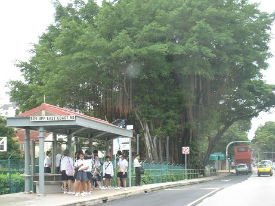
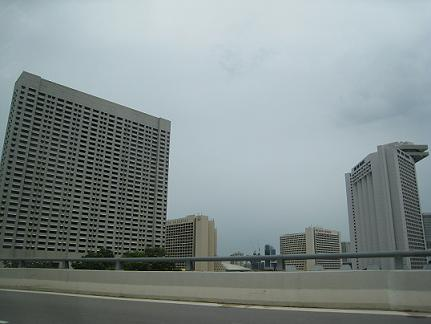
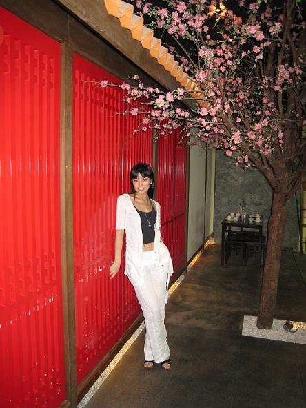
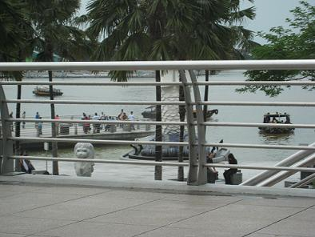
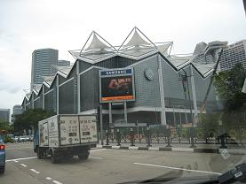

美丽的新加坡！真的好喜欢！

 好不容易盼到了＂五一＂节，本来想好７天天可以好好放松一下的，没想到还是接到了任务，就是５月３号和４号要去参加校园先锋行的演出．．．原先计划用４天时间出去交游，剩余三天在家练练琴．．．现在都泡汤了．．．
好不容易盼到了＂五一＂节，本来想好７天天可以好好放松一下的，没想到还是接到了任务，就是５月３号和４号要去参加校园先锋行的演出．．．原先计划用４天时间出去交游，剩余三天在家练练琴．．．现在都泡汤了．．．
越想越不甘心，怎么样也得弄个一日游，不然的话以后就更加没有时间了．．．
说行动就行动，拿起电话定了新加坡往返一日游的机票．．．
我在新加坡有一个好朋友，好久没有见面了，做后一次见面也是因为去新加坡演出才碰面的，他知道我要去超高兴，说要来机场接我．．．
下午２点３０起飞，坐飞机坐的我屁股都懒了，还好有美味的飞机餐陪我度过漫长的６小时．．．
晚上８点１５分，终于抵达了我最喜欢的地方新加坡，又看我的朋友早早的就等在机场接我，好ＨＩＧＨ好开心阿！！！！！不愧是我的知己，知道我喜欢看电影，前一天就定好了电影票，而且是我一直想看但是又没有时间去看的＜蜘蛛侠＞，我们飞速到酒店，放好行礼，又神速冲到电影院，那天整个电影院都暴满了．．．
＜蜘蛛侠＞太好看了，太精彩了，让我影响最深的是里面所有的打斗片段，真的是好刺激，还有蜘蛛侠的好朋友为了救蜘蛛侠，自己却牺牲了，看到这一段，我感动的哭了．．．我觉得这部影片让我喜欢的就是所有的画面和音乐配合的相当好，所以我在这里力推大家去看＜蜘蛛侠＞，不看是你损失！哈哈哈
看完＜蜘蛛侠＞，那时已经是１２点多了，好朋友带我去吃了美食街夜宵，边吃边聊天，真的好开心，如果经常可以那么潇洒的做那么ＨＩＧＨ的事情就好了．．．那天真的好想不睡觉，想充分利用这些短暂的时间和好朋友在一起．．．．可是到了３点多我实在坚持不住想睡觉了，而且我朋友第二天还要工作，所以就把我送回酒店了休息了．．．
第二天一觉睡到了中午，什么事情也做不了了，本来想去逛逛街买买东西的，后来还是泡汤了，下午４点５５的飞机，我飞机上海．．．
这是我第一次做出如此冲动地事情，新加坡一日游，其实从抵达到返回，一共才不到２０个小时，真的是时间很短．
这次一日游让我很开心，也让我得到了很大放松，虽然很赶，但还是看了＜蜘蛛侠＞，最重要的是要谢谢我亲爱的新加坡知己，谢谢你带我去看电影，谢谢你陪我做的每一件事情，我觉得好快乐．．．
哈哈！而且我觉得自从回来，现在我状态更加好了，更加有冲劲了，所以我觉得这次去的还是很值的．因为以后一定不会再有那么多时间让我做如此ＨＩＧＨ，如此疯狂的事情了，哈哈哈哈哈哈！

喝汤的地方，但是店名叫什么我已经忘记了，ＹＹ出来告诉大家吧！哈哈哈
机场停车场，好舍不得走啊！
这是我第二次到新加坡，上次来就好想看这个四不像的东西，这里终于才看到了一个背影，

随便拍拍，发自内心喜欢这个地方！哈哈哈
